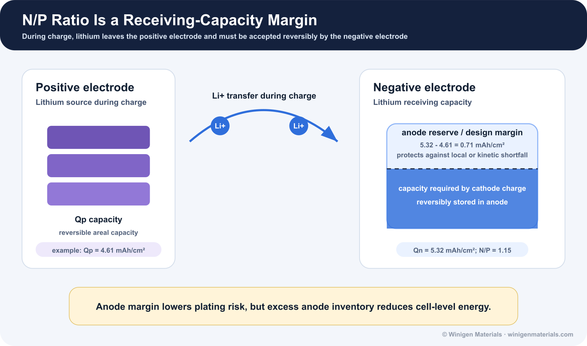
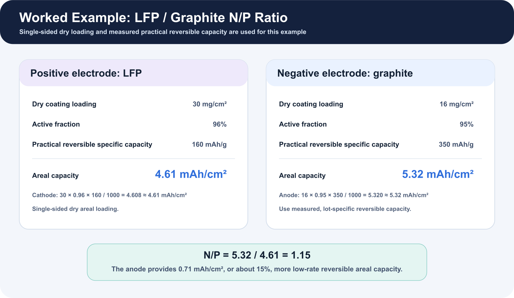
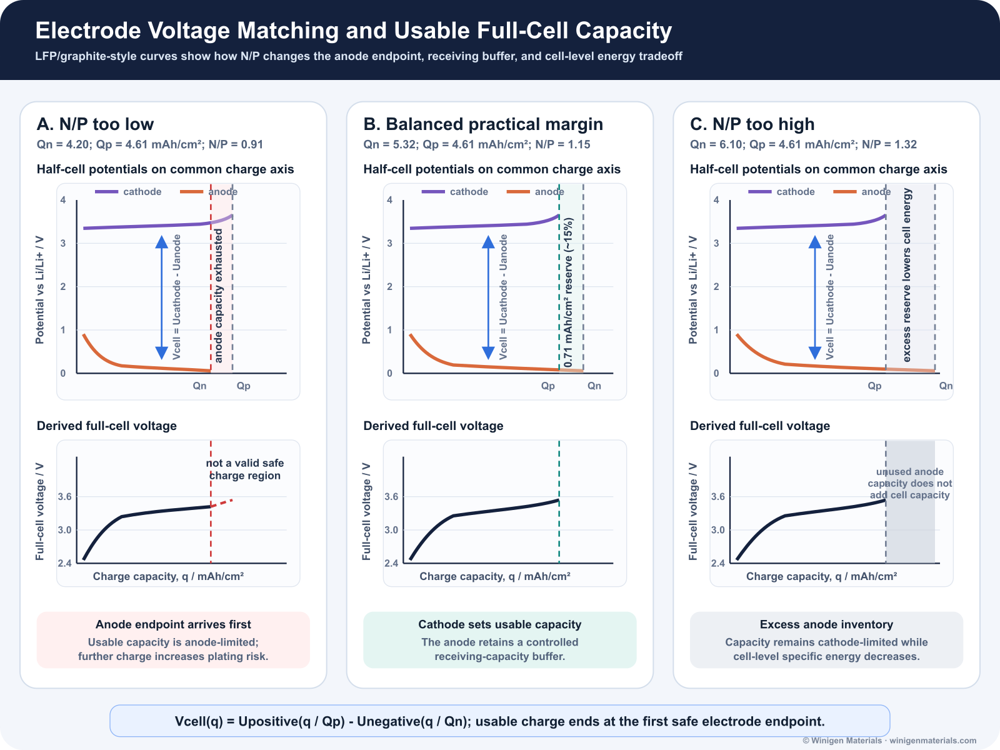
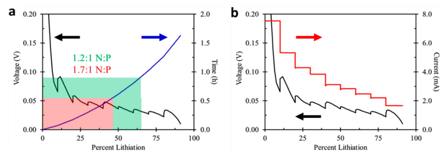
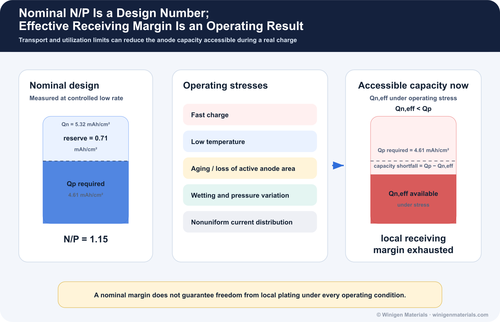
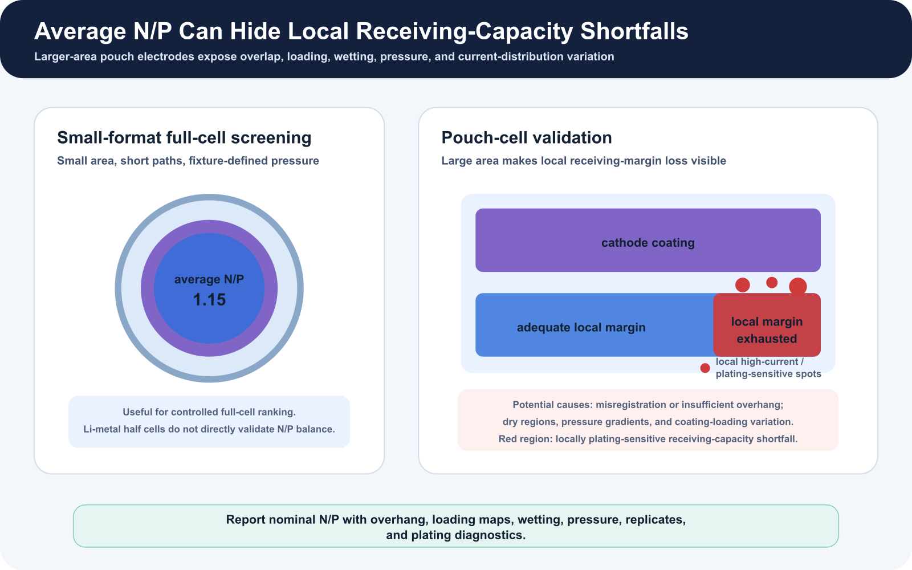
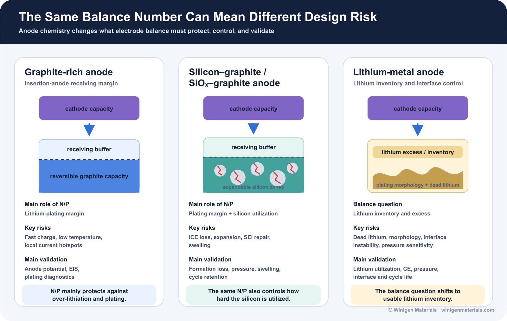

The central cell-design question is simple: does the negative electrode have enough reversible lithium-storage capacity to receive the lithium released by the positive electrode during charge, without forcing local regions into lithium-metal deposition?
The answer cannot be reduced to one universal N/P number. A nominally balanced cell can still plate lithium when it is charged too quickly, charged at low temperature, poorly wetted, over-calendered, aged, locally misaligned, or operated near full state of charge. Conversely, increasing negative-electrode capacity adds margin but also lowers energy density and changes first-cycle lithium loss. N/P ratio is therefore best treated as a controlled engineering tradeoff.
1. What N/P Ratio Means
For a conventional lithium-ion full cell, N/P ratio is the practical reversible areal capacity of the negative electrode divided by the practical reversible areal capacity of the positive electrode:[1]
The negative electrode may be graphite, silicon-graphite, SiOx-graphite, hard carbon, titanium oxide, or any other anode material. The positive electrode may be LFP, LMFP, NMC, NCA, LCO, LNMO, or any other cathode material. For an insertion-type cell, N/P above 1 means the negative electrode has more low-rate reversible capacity than the positive electrode is expected to deliver.

2. Calculate N/P from Practical Electrode Data
Areal capacity should be calculated from dry coating loading, active-material fraction, and a practical reversible specific capacity measured within the intended voltage, rate, and temperature window. Loading should be identified as single-sided or double-sided. Theoretical capacity is not sufficient because electrode formulation, porosity, utilization, formation, and cutoff conditions change the capacity that is actually accessible.[1]
For a single-sided LFP cathode with 30 mg/cm² dry coating loading, 96 wt% active material, and 160 mAh/g practical reversible capacity, the positive-electrode areal capacity is 4.61 mAh/cm². A graphite anode with 16 mg/cm² dry coating loading, 95 wt% active material, and 350 mAh/g practical reversible capacity provides 5.32 mAh/cm². The resulting N/P ratio is 1.15.

3. How Voltage-Capacity Matching Sets Usable Cell Capacity
The LFP/graphite-style example below places the positive- and negative-electrode half-cell voltage curves on the same charge-capacity axis.
During charge, the cathode is delithiated and its potential rises versus Li/Li+. At the same time, the anode is lithiated and its potential decreases toward the lithium-plating region near 0 V versus Li/Li+. The full-cell voltage is the difference between these two electrode potentials at the same charge capacity:
Here, Qp is the practical reversible areal capacity of the positive electrode, Qn is the practical reversible areal capacity of the negative electrode, and q is the charge passed from the discharged state during full-cell charging.

At low N/P, the anode reaches its safe lithiation endpoint before the cathode reaches its charge cutoff; further cathode delithiation cannot be accommodated safely by insertion alone. At balanced N/P, the cathode sets usable capacity while the anode retains a controlled receiving buffer. At excessive N/P, the cathode still limits usable capacity while unused anode material adds mass, volume, interphase area, and first-cycle lithium demand.
N/P is therefore a voltage-capacity matching problem connecting electrode loading, practical reversible capacity, cutoff voltage, lithium-plating margin, and cell-level energy density.[1]
4. Why N/P Ratio Matters
During charge, the positive electrode releases lithium while the negative electrode accepts it. If the negative electrode reaches a highly lithiated state too early, its potential approaches 0 V versus Li/Li+. Local overpotential can then drive metallic lithium deposition, especially during fast charge, cold charge, high-SOC operation, or nonuniform current distribution. Plated lithium may become electrically isolated, thicken the interphase, raise impedance, and create aging or safety concerns.[4]
Increasing N/P can lower average negative-electrode utilization and provide more receiving margin. That benefit is not free: additional negative-electrode coating adds mass and volume, reduces the positive-electrode fraction of the cell, and can consume more cyclable lithium during first-cycle interphase formation. Kasnatscheew et al. frame this directly as a tradeoff between lithium-plating protection and specific energy.[1]

5. What Happens When N/P Is Too Low
At low N/P, the negative electrode must operate at higher utilization to accept the positive electrode's charge. This reduces tolerance for coating variation, cathode-anode mismatch, capacity-estimation error, and loss of active negative-electrode area. The risk becomes more severe when ionic transport or interfacial kinetics are slow.
- Negative-electrode potential approaches the lithium-plating regime earlier.
- Local current hotspots can plate even when the average N/P calculation appears acceptable.
- Fast charge, low temperature, high SOC, aging, and high loading reduce available margin.
- Dead lithium, impedance growth, capacity fade, and potentially higher local heat generation can follow.[4]
Kim et al. reported that raising N/P above approximately 1.10 suppressed lithium plating under their 0.85C, 25 °C test condition, while N/P 1.20 improved cycling. That result is useful evidence, but it should not be converted into a universal threshold because electrode chemistry, design, and charging conditions determine where plating begins.[2]
6. What Happens When N/P Is Too High
A larger negative electrode can reduce its utilization and add kinetic margin, but excessive oversizing penalizes cell-level energy. More negative-electrode active material, binder, conductive additive, coating thickness, and associated current-collector area must be carried for the same positive-electrode capacity. A larger interphase-forming surface can also increase first-cycle lithium loss.
The tension is especially clear in fast-charge design. Yourey et al. compared N:P reversible-capacity ratios of 1.2:1 and 1.7:1 for NMC/MCMB electrode pairs. The higher-ratio design accepted about 16% more capacity during a ten-minute charge in their study, but it also delivered lower reversible specific capacity because more negative-electrode capacity remained underutilized and irreversible loss increased.[6]

7. Practical Starting Ranges Are Not Universal Specifications
Published studies and industrial designs frequently place insertion-anode N/P somewhat above 1, but the appropriate value depends on how capacity is measured and what failure mode the cell must avoid. The ranges below are starting points for screening discussion, not product or safety specifications.[1][2][3]
| Cell system | Screening discussion | Variables that can shift the target |
|---|---|---|
| LFP / graphite | Studies commonly compare ratios near 1.0 to 1.2. Higher margin can favor long life or rate tolerance; lower margin can favor initial energy. | Graphite grade, areal loading, formation, high-rate aging, and low-temperature charge. |
| NMC / graphite | Often designed with a controlled margin above 1 while limiting excess negative-electrode mass. | Upper cutoff voltage, graphite kinetics, loading, fast-charge target, and manufacturing variation. |
| High-Ni NMC / graphite | Requires careful joint control of negative-electrode margin and positive-electrode degradation. | Lithium inventory loss, cross-talk, gas, high-SOC storage, and high-voltage formation. |
| SiOx-graphite or Si-graphite | Capacity balancing must consider first-cycle efficiency, silicon utilization, expansion, and interphase repair. | Silicon fraction, prelithiation, binder, porosity, pressure, and cycle depth. |
| Fast-charge cells | May benefit from additional negative-electrode margin, but N/P alone cannot fix transport limitation. | Electrolyte conductivity, wetting, tortuosity, desolvation, SEI resistance, temperature, and charge protocol. |
Abe and Kumagai illustrated the tradeoff in LFP/graphite cells at N/P ratios of 0.87, 1.03, and 1.20. The lowest ratio produced the highest initial specific capacity, while N/P 1.20 provided the strongest 5000-cycle retention and better high-rate aging in their design.[3]
8. Silicon Changes the N/P Design Problem
For silicon-containing negative electrodes, N/P determines more than lithium-plating margin. It also changes how deeply silicon is utilized. Higher silicon utilization can increase expansion, interphase fracture and repair, electrolyte consumption, impedance, and irreversible lithium loss. A higher N/P ratio can reduce average anode utilization and mechanical severity, but it also increases the quantity of underused negative-electrode material.[5][7][8]
Three-electrode measurements are especially valuable because full-cell voltage does not reveal whether a capacity or impedance change originates at the positive or negative electrode. Luo et al. used individual electrode potentials in NMC532/Si cells and found that higher N/P improved reversibility, retention, and impedance behavior, consistent with lower silicon volume-change severity. Mu et al. similarly showed for Si-Gr/NMC811 that increasing N/P changes positive- and negative-electrode utilization in opposite directions.[7][8]
Practical silicon designs should therefore report silicon fraction, first-cycle efficiency, prelithiation condition if used, negative-electrode expansion, pressure, formation protocol, and reversible areal capacity alongside nominal N/P.
9. Nominal N/P and Effective Receiving Margin Are Different
Nominal N/P is normally calculated from low-rate reversible capacity. During fast charging, however, the entire negative electrode is not equally available. Electrolyte transport, desolvation, interphase resistance, graphite solid-state diffusion, pore tortuosity, local wetting, temperature, and state of charge determine how much receiving capacity is kinetically accessible at a particular moment.
This produces a useful distinction: nominal N/P is a design number; effective receiving margin is an operating-condition result. Dong et al. describe how high charging rates can reduce the negative-electrode sites available for lithium insertion. A cell calculated at N/P 1.15 under low-rate conditions can therefore exhaust its local or kinetically accessible receiving margin during a cold or aggressive charge.[9]

10. Coin Cells and Pouch Cells Expose Different N/P Risks
Coin cells are valuable for measuring half-cell capacity, formation response, and early full-cell ranking. Their small electrode area, fixture-defined compression, and commonly generous electrolyte amount can nevertheless hide local balance problems. A pouch cell introduces larger coating area, anode overhang, registration error, spatial wetting variation, pressure gradients, current-distribution effects, and visible gas or swelling.
Average N/P can remain unchanged while local receiving margin is exhausted. Cathode-anode misalignment, insufficient anode overhang, a dry region, local loss of active material, or uneven pressure can force neighboring negative-electrode regions to higher local utilization. This is why a pouch-cell validation plan should connect electrode maps, overhang, loading uniformity, E/C ratio, formation, pressure, and post-charge plating diagnostics.

This extends the validation logic developed in From Coin Cell to Pouch Cell, Part 1 and Part 2: Wetting, Gas, and Formation.
11. A Practical N/P Screening Workflow
- Measure practical half-cell capacities. Use representative electrode lots, relevant rates, and intended voltage limits.
- Calculate nominal areal-capacity balance. Include single- or double-sided dry loading, active fraction, practical capacity, and uncertainty.
- Confirm full-cell utilization. Track first-cycle efficiency, lithium inventory loss, voltage profile, and dQ/dV.
- Use a reference electrode where possible. Three-electrode testing separates positive- and negative-electrode potentials.
- Stress the receiving margin. Test fast charge, low temperature, high SOC, aging, and realistic formation separately.
- Track impedance and plating evidence. Compare EIS/DCIR at matched SOC, temperature, rest time, and pressure; use post-mortem or operando plating diagnostics where justified.
- Validate the geometry. Use realistic loading, E/C ratio, N/P distribution, overhang, pressure, and replicate pouch cells.
12. Quantitative Metadata Needed to Interpret N/P
| Parameter | Recommended reporting | Why it matters |
|---|---|---|
| Positive and negative areal capacity | mAh/cm², with measurement rate and voltage range | Defines the numerator and denominator using accessible capacity. |
| Dry coating loading and active fraction | mg/cm2 and wt%; identify single- or double-sided loading | Allows the balance calculation to be audited. |
| Electrode density and porosity | g/cm3 and % after calendering | Changes transport, utilization, wetting, and effective margin. |
| First-cycle efficiency | Per electrode and full cell where available | Quantifies cyclable-lithium loss and silicon/graphite interphase burden. |
| Overhang and registration | mm by edge or mapped area | Average N/P does not capture local cathode-anode mismatch. |
| Formation and charge protocol | C-rate, current steps, voltage holds, temperature, rest, and pressure | Controls electrode utilization, interphase formation, and plating risk. |
| E/C ratio and wetting | g/Ah, total mass, fill method, and rest time | Local electrolyte starvation can reduce effective negative-electrode access. |
| Plating diagnostics | Voltage relaxation, dQ/dV, reference potential, microscopy, or other method | Capacity retention alone cannot prove absence of plating. |
| Replicates and variability | n, mean, standard deviation, and failure count | Separates a real N/P effect from build or coating variation. |
13. N/P Ratio Depends on the Full Cell Design
N/P ratio is an important electrode-balance number, but it should not be interpreted by itself. In practical cell design, the same nominal N/P ratio can represent very different risk depending on the anode chemistry, cathode loading, silicon content, electrolyte formulation, separator system, pressure condition, and charge protocol.
For graphite-rich cells, N/P ratio mainly describes the negative electrode's receiving-capacity margin during charge. The key concern is whether the graphite anode can accept lithium without approaching lithium plating under fast charge, low temperature, high SOC, aging, or local nonuniformity.
For silicon-containing anodes, the same N/P number carries additional meaning. Silicon increases anode capacity, but it also introduces lower first-cycle efficiency, volume expansion, SEI repair, swelling, and stronger dependence on binder, pressure, formation, and electrolyte additives. In these systems, N/P ratio affects not only plating margin, but also how deeply the silicon-containing anode is utilized.
For lithium-metal cells, the balance question changes again. The negative electrode is no longer a conventional insertion material with a fixed reversible intercalation capacity. Instead, the practical concern becomes lithium inventory, dead lithium formation, lithium morphology, interface stability, pressure, and the amount of lithium excess needed to support the target cycle life.
This is why N/P ratio should be evaluated together with the full cell design package: cathode chemistry, anode chemistry, practical reversible capacity, first-cycle efficiency, electrode loading, porosity, electrolyte wetting, formation protocol, separator design, pressure, temperature, and charge rate.

The practical lesson is simple: N/P ratio is a useful starting point, but the real design question is whether the negative electrode can safely and repeatedly receive lithium under the actual operating and manufacturing conditions of the cell.
14. How N/P Ratio Connects to Battery Materials Selection
N/P ratio is often treated as a cell-design calculation, but every term in that calculation depends on material selection. The positive-electrode material defines the lithium source and the denominator of the ratio. LFP, LMFP, NMC, NCA, LCO, LMO, and LNMO differ in practical capacity, voltage window, loading target, moisture sensitivity, and high-voltage behavior. The relevant input is the practical reversible areal capacity of the chosen grade and electrode formulation, not a generic theoretical value.
The negative-electrode grade defines lithium receiving capacity and first-cycle lithium demand. Winigen's standard graphite listing, for example, gives a typical reversible-capacity range of 340-360 mAh/g and commonly at least 90% first-cycle efficiency, subject to grade and lot confirmation. High-power graphite changes particle-size and rate tradeoffs. Silicon, SiOx, and Si-C composites introduce additional variables: silicon fraction, capacity grade, initial efficiency, expansion, particle size, binder compatibility, and the degree of silicon utilization.
Electrolyte formulation changes the practical meaning of the calculated margin. A cell with an acceptable nominal N/P can still plate lithium if wetting is incomplete, low-temperature transport is weak, interfacial impedance is high, or the SEI is unstable. Salts, solvents, and additives can improve kinetics and interphase durability, but they do not replace correct electrode balancing. N/P should therefore be evaluated together with material grade, first-cycle efficiency, electrolyte formulation, formation, charge rate, temperature, pouch-cell pressure, wetting, and electrode alignment.
| Design question | Relevant Winigen material or support |
|---|---|
| What is the cathode's practical areal capacity? | LFP, LMFP, NMC, NCA, LCO, LMO, and LNMO active materials, with grade-specific capacity, morphology, PSD, moisture, and documentation review. |
| What is the anode's reversible receiving capacity? | Standard graphite, high-power graphite, silicon, SiOx/Si-C, LTO, hard carbon, and lithium-metal options. |
| How much lithium is lost during formation? | Graphite and silicon-composite grade selection, first-cycle-efficiency review, and formation-sensitive full-cell comparison. |
| How should silicon expansion and utilization be controlled? | Silicon powder and SiOx/Si-C composite selection by particle size, silicon content, capacity grade, initial efficiency, expansion, and binder compatibility. |
| How stable is the negative-electrode interphase? | FEC, VC, sulfur-containing, nitrile, phosphorus, and other additive screening for SEI/CEI, gas, impedance, fast-charge, and temperature response. |
| Can the cell fast charge without plating? | High-rate and low-temperature electrolyte formulation support, including solvent, LiFSI/co-salt, additive, wetting, formation, and impedance strategy. |
| Will the balance translate to pouch cells? | R&D-to-pilot screening across wetting, formation, EIS/DCIR, gas and swelling, stack pressure, registration, and replicate-cell validation with strategic partners. |
Winigen Materials supplies the active materials, electrolyte salts, solvents, additives, and formulation support that determine practical electrode balance. Final material selection should confirm morphology, particle-size distribution, reversible capacity, initial efficiency, moisture, packaging, COA/TDS availability, and the intended cell-validation stage.
15. Bottom Line
N/P ratio is a receiving-capacity margin, not a magic constant. Too little margin raises negative-electrode utilization and can increase lithium-plating sensitivity. Too much margin adds mass, volume, interphase area, and first-cycle loss while reducing cell-level energy. The right balance is the lowest margin that remains robust across the intended rate, temperature, aging, formation, electrode variation, and cell format.
For graphite, silicon-containing, fast-charge, and high-loading cells, nominal N/P should be paired with an effective-margin analysis. The most credible design evidence combines practical half-cell capacity, three-electrode or anode-potential information, formation response, matched-condition impedance, plating diagnostics, and realistic pouch-cell validation.
References and Further Reading
Figure-use note: Literature figures and tables are cited for technical context but are not reproduced unless their reuse license is explicit. The conceptual diagrams on this page are original illustrations and should not be interpreted as digitized data from the cited papers.
- Kasnatscheew, J. et al. A Tutorial into Practical Capacity and Mass Balancing of Lithium Ion Batteries. Journal of The Electrochemical Society 164, A2479-A2486 (2017). doi:10.1149/2.0961712jes.
- Kim, C.-S. et al. Effects of capacity ratios between anode and cathode on electrochemical properties for lithium polymer batteries. Electrochimica Acta 155, 431-436 (2015). doi:10.1016/j.electacta.2014.12.005.
- Abe, Y. & Kumagai, S. Effect of negative/positive capacity ratio on the rate and cycling performances of LiFePO4/graphite lithium-ion batteries. Journal of Energy Storage 19, 96-102 (2018). doi:10.1016/j.est.2018.07.012.
- Waldmann, T. et al. Li plating as unwanted side reaction in commercial Li-ion cells: A review. Journal of Power Sources 384, 107-124 (2018). doi:10.1016/j.jpowsour.2018.02.063.
- Chen, Z. et al. Effect of N/P ratios on the performance of LiNi0.8Co0.15Al0.05O2/SiOx-graphite lithium-ion batteries. Journal of Power Sources 439, 227056 (2019). doi:10.1016/j.jpowsour.2019.227056.
- Yourey, W. et al. Design Considerations for Fast Charging Lithium Ion Cells for NMC/MCMB Electrode Pairs. Batteries 7, 4 (2021). doi:10.3390/batteries7010004.
- Luo, M. et al. Examining Effects of Negative to Positive Capacity Ratio in Three-Electrode Lithium-Ion Cells with Layered Oxide Cathode and Si Anode. ACS Applied Energy Materials 5, 5513-5518 (2022). doi:10.1021/acsaem.2c00665.
- Mu, G. et al. Impacts of negative to positive capacities ratios on the performance of next-generation lithium-ion batteries. Electrochimica Acta 406, 139878 (2022). doi:10.1016/j.electacta.2022.139878.
- Dong, T. et al. Challenges and Strategies of Fast-Charging Li-Ion Batteries. Energy Materials Advances 5, 0113 (2024). doi:10.34133/energymatadv.0113.
Discuss Electrode Balance and Cell Validation
Share your cathode and anode chemistry, loading, practical capacity, silicon fraction, formation protocol, charge target, and cell format. Winigen Materials can help identify relevant active materials, electrolyte components, and a practical screening sequence, and can arrange development, testing, and validation with strategic partners.
Contact Winigen MaterialsAll original diagrams on this page are © Winigen Materials unless otherwise noted. They may not be reproduced, modified, or redistributed without permission.